Шаг 1: подготавливаем куриное филе.
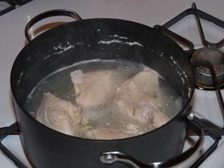
Размороженное филе курицы промываем под проточной водой. В кастрюлю наливаем воду и ставим на средний огонь. Когда вода закипит, добавляем в нее немного соли и вручную перекладываем ингредиент в емкость с кипятком. Варим мясо на среднем огне 45 минут. Затем с помощью вилки достаем из бульона куриное филе и перекладываем на разделочную доску.
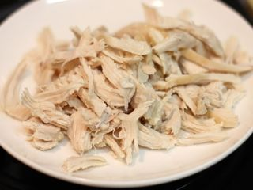
Нарезаем наш ингредиент ножом на небольшие брусочки и перекладываем в отдельную тарелку.
Шаг 2: отвариваем овощи.
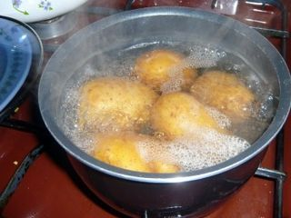
Сырой картофель с морковкой тщательно промываем щеткой под проточной водой. Так как картофель в мундире готовится в подсоленной воде, а воду, в которой будет вариться морковь, мы не солим, поэтому отваривать наши овощи мы будем по отдельности в разных емкостях. Перекладываем картофель в кастрюлю с холодной водой, так чтобы она полностью покрывала наш корнеплод и ставим на большой огонь. Добавляем щепотку соли, это предотвратит растрескивание картофельной кожуры. Затем кастрюлю с нашим ингредиентом накрываем крышкой. Доводим воду до кипения, уменьшаем огонь до минимума, варим овощ 25-30 минут. Проверяем готовность с помощью вилки, проткнув ею корнеплод. Если картошка мягкая, значит готова. Выключаем огонь, а кастрюлю с готовой картошкой ставим под холодную воду, так она легче чистится от кожуры.
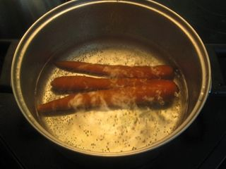
Ту же процедуру проделываем и с морковкой, только с той разницей, что воду, в которой мы будем варить этот овощ, не солим.
Шаг 3: подготавливаем овощи.
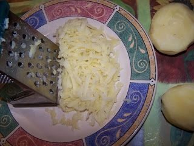
Охлаждаем овощи под холодной водой. С помощью ножа очищаем их от шкурки. И на средней терке натираем наши овощи по отдельности в разные тарелки на овощную стружку. Итак, вначале будет картошка.
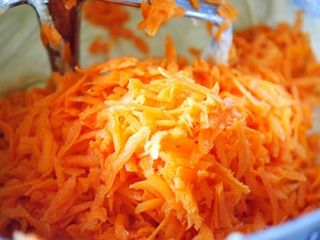
Затем натираем морковь.
Шаг 4: подготавливаем сыр.
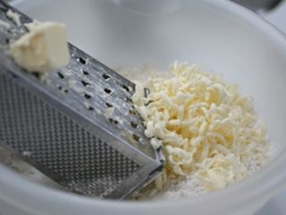
Воспользовавшись средней теркой, натираем копченый сыр на стружку в отдельную тарелку. Терку перед использованием нового ингредиента нужно хорошо промыть под проточной водой.
Шаг 5: подготавливаем куриные яйца.
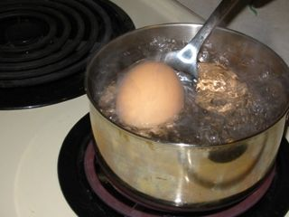
Наливаем в кастрюлю воду комнатной температуры и ставим на средний огонь. Не дав воде нагреться, опускаем с помощью столовой ложки в емкость яйца. Жидкость должна полностью покрыть наш ингредиент. Когда вода в кастрюле закипит, чтобы скорлупа не треснула во время варки яиц, добавим немного соли и с этого момента варим яйца 10 минут. По окончании варки посуду с яйцами помещаем под холодную воду для того, чтобы скорлупа легче очистилась.
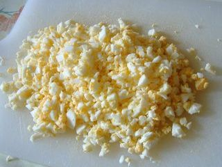
Вручную снимаем скорлупу с яиц и с помощью мелкой терки натираем яйца в тарелку.
Шаг 6: подготавливаем огурцы.
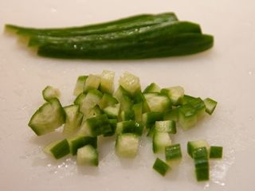
Промываем огурцы под проточной водой и перекладываем на разделочную доску. С помощью ножа нарезаем наш ингредиент вначале вдоль, а затем поперек на небольшие квадратики, размером не более 5 миллиметров и выкладываем на отдельную тарелку. Важно измельченные огурцы не солить, чтобы они не пустили сок и не стекли.
Шаг 7: подготавливаем лук.
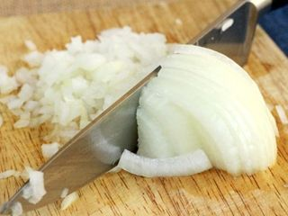
Ножом очищаем лук от шелухи и хорошо промываем его под проточной водой. На разделочной доске с помощью острого инвентаря измельчаем наш ингредиент на небольшие кубики размером не больше 1 сантиметра и перекладываем в свободную тарелку.
Шаг 8: подготавливаем курино-луковый слой салата.
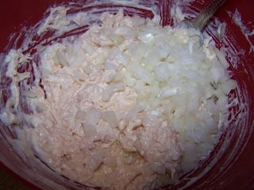
Из тарелки в миску с помощью столовой ложки перекладываем кусочки куриной грудки и сюда же добавляем измельченный лук и майонез. Все ингредиенты хорошо перемешиваем с помощью столовой ложки.
Шаг 9: готовим слоеный салат «гости на пороге».
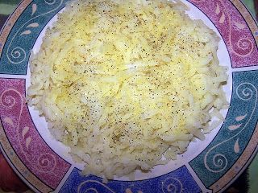
Выкладываем послойно наши подготовленные ингредиенты на широкое блюдо для подачи. Первый слой из тертого картофеля. С помощью столовой ложки перекладываем картофельную стружку на блюдо равномерным слоем, слегка его посолим и поперчим. Затем сверху на него выкладываем майонез и с помощью того же столового инвентаря разравниваем ингредиент по всей поверхности первого слоя.
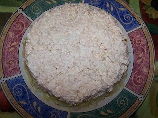
Затем выкладываем на этот слой измельченное филе с луком и с помощью ложки равномерно разравниваем его по всей поверхности картофельного слоя. Так как второй слой уже пропитан майонезом, поэтому на него не нужно выкладывать этот ингредиент.
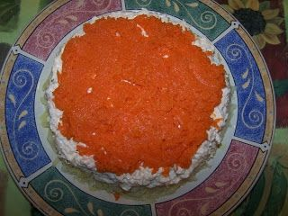
Третий слой нашего салата будет из измельченной морковки. Ее также с помощью столовой ложки выкладываем на второй слой и равномерно разравниваем по всей поверхности второго слоя.
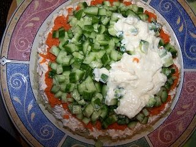
Теперь перекладываем на слой морковки, квадратики свежего огурца и слегка посолим его. На огуречный слой выкладываем ложкой майонез и снова равномерно его распределяем по всей поверхности этого слоя.
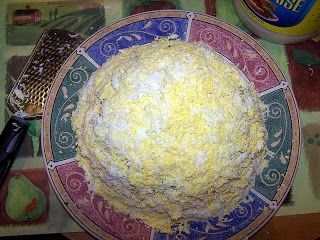
Остается добавить сверху на третий слой тертый сыр и мелко потертое яйцо.
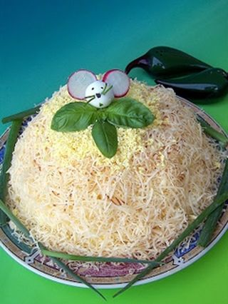
Теперь подключаем вашу фантазию и украшаем верхний слой по вашему желанию. Возможно, это будет симпатичный мышонок из редиски с листиками от салата или петрушки.